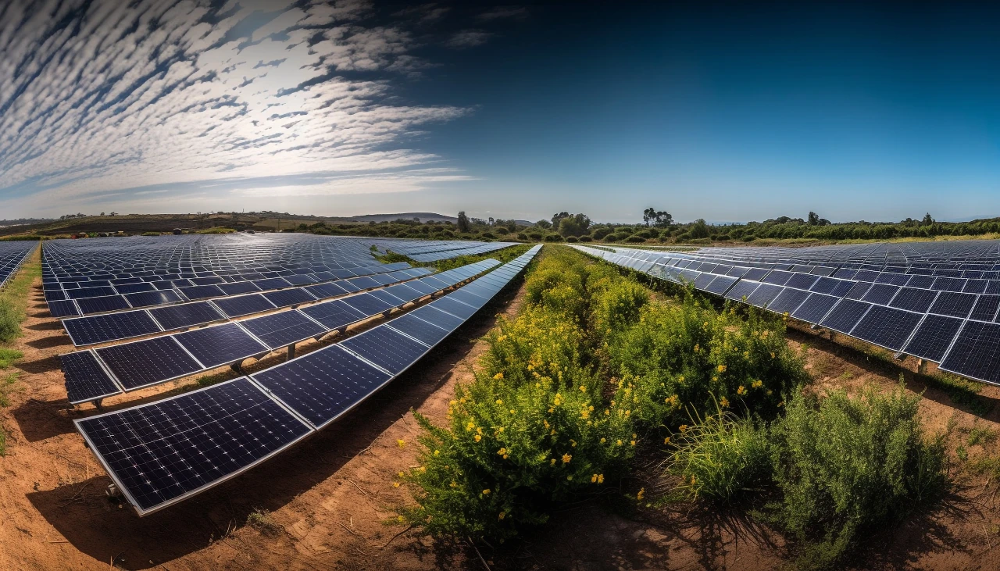

Energía solar y biodiversidad: las plantas fotovoltaicas pueden ayudar al ecosistema
En los últimos años, investigadores y responsables políticos han empezado a analizar el impacto ambiental de las plantas solares. Un debate reciente organizado por la Unión Española Fotovoltaica en el Congreso de los Diputados reunió a científicos, empresas y autoridades para estudiar cómo la energía solar puede integrarse con la biodiversidad.
Los resultados muestran que, cuando se diseñan correctamente, los parques fotovoltaicos pueden tener efectos positivos en el medio ambiente. Por ejemplo:
- En algunas instalaciones se recupera la vegetación natural porque el terreno deja de usarse para agricultura intensiva.
- Se crean refugios para especies de aves, insectos y pequeños mamíferos.
- Se aplican técnicas como pastoreo controlado, revegetación del suelo o hoteles de insectos para favorecer los ecosistemas.
Además, este modelo también puede tener beneficios sociales, como generar empleo en zonas rurales o impulsar la economía local. Sin embargo, los expertos señalan que todo depende de una planificación adecuada y de evaluaciones ambientales rigurosas.

Energías renovables y permisos ambientales
La expansión rápida de las energías renovables también está generando controversias. En España, una investigación judicial analiza posibles irregularidades en la autorización de un megaparque solar en Cáceres, vinculado a proyectos de la empresa Iberdrola.
Leer más